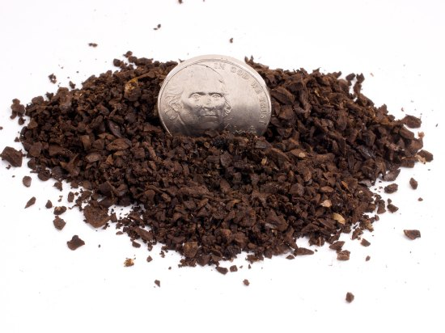
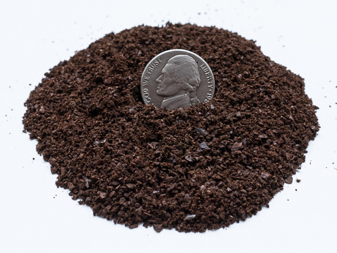
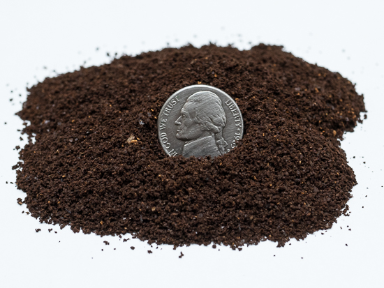
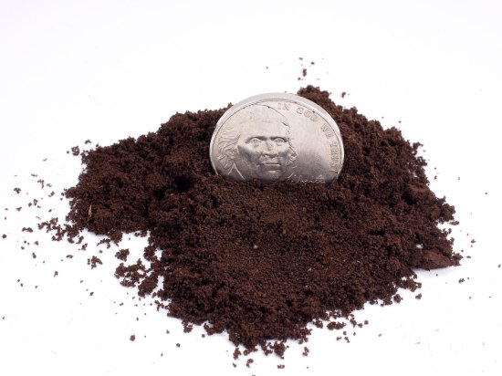
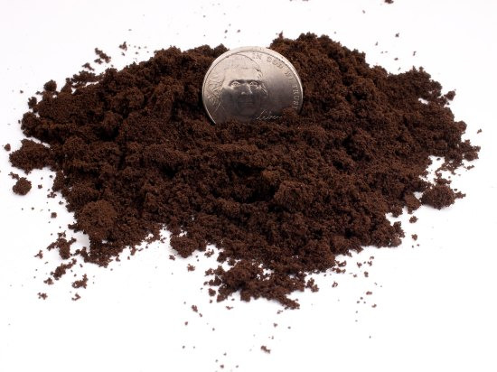

This table explains how much you need to grind to get ideal coffee.
| Way of brewing | Size | Visual |
| Cold Brewing | Extra Coarse Grind |  |
| French Press and Cupping | Coarse Grind |  |
| Chemex and Cafe Solo | Medium Coarse Grind |  |
| Drip Brewing | Medium Grind |  |
| Vacuum and Spihon | Medium Fine Grind |  |
| Espresso | Fine Grind |  |
| Turkish Coffee | Extra Fine Grid |  |